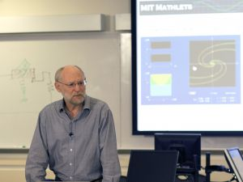
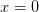
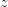
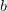
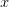
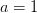

CREATED BY JUTOH - PLEASE REGISTER TO REMOVE THIS LINE
Search for:
Contents
This module contains two examples of using MIT Mathlets in lecture. The first illustrates the artistic and dynamic character of the Mathlets. The second and more interactive example shows how formulas can be brought to life using the Mathlets in lecture. Each segment is followed by questions, my remarks about the lecture fragments and the features of the Mathlets, and examples that illuminate their use. At the end there are a couple of exercises.
You will first try out the Mathlets in a separate window. Next, you will watch video segments where you will be instructed to pause and engage in a variety of activities, as well as think about the questions posed.
Download Module slides [ PDF, 2.1 MB ]
Download Complete Module 1 video [ ZIP, 132MB, 540p]
After completing this module, the participant will be able to use Mathlets to:
Support lecture-based instruction.
Increase student participation in the lecture.
Use Mathlets to help students correlate visual images with symbols and computations.
In this video clip, I will introduce the first Segment of this Module, set out its learning objectives, and make some general comments about using Mathlets in lecture. Then you will watch a fragment of a lecture centered on the Linear Phase Portraits: Cursor Entry Mathlet. This is followed by some questions for you to consider, and my remarks.
As you watch the Mathlets in Lecture, Segment 1 video, take notes regarding the following:
Your reactions to the Mathlets.
Thoughts about how you would or will incorporate the Mathlets into your own teaching.
Thoughts about the approach you would use to teach the material presented.
Mathlet: Linear Phase Portraits Cursor Entry
Transcript [ PDF ]
The video segment you just completed ended with the presentation of three sets of questions for you to reflect and respond to. The first is regarding your initial thoughts and reactions regarding the Mathlets. Next, reflect on how I introduced the Mathlets versus how you would approach the same task, and finally please take a look to the future and all that you could do with the Mathlets.
Introduction to Mathlets: When you first saw the Mathlet, there was a lot of information on the screen.
Do you remember how you felt?
Were you confused by it?
I ask because your students’ experience will be not too different from your own, unless you have seen an applet like this before.
Presenting Mathlet Functionality
I introduced the various windows and functionalities of the Mathlet over a period of several minutes. Make an ordered list of these, in sequence, and think about other ways I might have presented them to this audience.
There are still other aspects of this tool that I did not talk about at all. What are a few additional investigations one can pursue using Mathlets?
In a differential equations class, the objectives of a lecture fragment looks something like this:
Mathematical objectives:
Demonstrate the variety of phase portraits afforded by homogeneous linear two-dimensional systems of differential equations.
Demonstrate the control exercised by the trace and determinant of the defining matrix on the phase portrait.
Convince the student that the trajectories deform smoothly as the matrix changes.
For a more mathematical audience I would have talked about the eigenvalues; they are together equivalent to giving the trace and determinant; whether they are complex or real determines the region in the trace-determinant plane; and the fact that the sign of the real part determines stability.
I also would have pointed out what is common among phase portraits of matrices with the same trace and determinant, at least in the case that the eigenvalues are real (nodes or saddles); this has to do with the relative magnitudes of the eigenvalues. For non-real eigenvalues inside the critical parabola the phase portrait consists of spirals. It is no longer the case that the space of matrices with given trace and determinant is connected. Instead, this space has two components, and that is represented by the split window. The upper part contains spirals that move in the clockwise direction; the lower part contains spirals that move in the counterclockwise direction.
The Mathlet used in this lecture has a cousin, Linear Phase Portraits: Matrix Entry. In this Mathlet, you can adjust the entries of the matrix A manually (by means of sliders, of course). One can also create the companion matrix, with top row [0, 1], with the given trace and determinant.
In my differential equations course, I use one or the other of these Mathlets in several different lectures, focusing on different aspects of it at different stages of our study of linear systems of differential equations.
To conclude this segment we will discuss the design features of Mathlets. When preparing to teach using technology, it is important for you as the teacher to understand why the tool is designed the way it is. Finally, I will identify some of the advantages to using Mathlet technology during your lectures that were identified during Segment 1.
Transcript [ PDF ]
Segment 2 provides an introduction to a more interactive approach to teaching with Mathlets which is supported with research regarding active learning. During this segment of the video pay particular attention to and take notes regarding my interactions with the students in the workshop.
Mathlet: Graph Features
Transcript [ PDF ]
This was an interactive lecture, with quite a few suggestions and answers from the audience. How many students do you think provided feedback? Do you think I had any information about how much the others were understanding?
What further lessons could you draw from this Mathlet in a lecture setting?
It is a good exercise to analyze what the different objectives of a lecture are, at a pretty fine level. For example, here is a listing of the components of the lecture fragment about the Graph Features Mathlet.
Talking through what you see on the screen
Discussion of evaluation, set 
Graph features: rising, falling, concave, convex
Question: Control of behavior for large ?
More features: minima, maxima
First degree case
Second degree case
Question: What makes the graph go through the origin?
Question: What is the effect of increasing ?
Commentary on flash cards
Question: What is the role of linear term?
Completing the square
Checking the result
Getting more from the formula: effect of
…And verifying it on the Mathlet
One of the things Mathlets let you do is break down the lecture into small fragments. This keeps the students interested, and lets them pick up the thread after attention lapses.
I decided to begin by accepting the rather interesting graph of the cubic, but to ask a question which reverses the usual sequence: instead of starting with the formula for our function and asking what can be said about the graph, I started with the graph and asked how you had to adjust the coefficients to achieve particular effects: behavior for large , and behavior for .
While I was lecturing, I was inviting students to help me perform the demonstration. So, for example, as soon as a student proposed reversing the sign of to make the function decrease for large , I accepted it and tried it out on the Mathlet. This is a good example of how you can perform experiments in class with Mathlets.
I decided to pose this question before talking about other graph features, critical points and point of inflection, to break up the descriptive part of the talk a little bit.
I invited a vote about the effect of increasing . This is a concept quiz. By chance, the camera picked up one of the virtual votes I was referring to in my lecture. You can see the hand go up and then quickly down again, in the back of the room. A number of participants thought that increasing would make the parabola fatter. They put up their hands in support of fatter, but when the saw they were in a minority they quickly put their hands down again. I think the sense of shame (surely undeserved!) probably negated any learning they might have experienced.
I said that asking about the role of the linear term was unfair. Well, whether it is unfair or not depends upon the context. If I want students to exercise their skill at completing the square and interpreting the result, or taking the derivative and setting it equal to zero, this would be a perfectly appropriate question. But these were not skills I wanted to challenge this audience with in this particular lecture fragment.
To conclude Mathlets in Lecture, Segment 2, I will provide a few useful hints on using Mathlets in your lectures, and discuss the use of concept questions. Finally, I will once again identify some of the advantages to using Mathlet technology that were identified during this segment.
Transcript [ PDF ]
For two of the four projects below, design an appropriate use of a Mathlet in lecture. Write notes describing the precise learning objective, what motions you will make with the Mathlet, what you will write on the blackboard, and what you will ask your students.
The simplest use of a Mathlet is to verify calculations. So design a lecture fragment in which you compute the location of critical points and the point of inflection of a cubic polynomial and then verify your answer using Graph Features. You might want to make use of the crosshairs.
A converse usage is to make measurements on the Mathlet and verify them by calculation. This has the virtue of giving visual significance to symbols in advance. Devise a lecture fragment using Graph Features which focuses on the question of whether there is a point of inflection or not. I suggest fixing .
You are teaching calculus and you are at the point of discussing the meaning of the tangent line to a graph, and its slope. Develop a lecture fragment using Secant Approximation to help students get intuition about this.
Pick a target audience and match a learning objective with one of the Mathlets. Then sketch a lecture fragment using this Mathlet to help students meet the chosen learning objective.
These materials are Copyright © 2013, Massachusetts Institute of Technology and unless otherwise specified are licensed under a Creative Commons Attribution-NonCommercial-ShareAlike 3.0 Unported license.